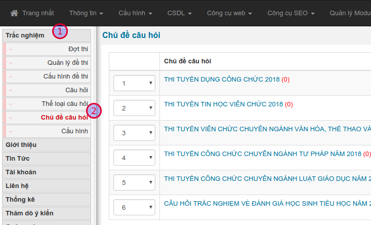
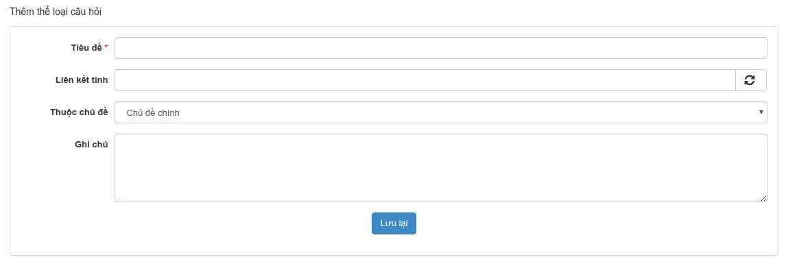
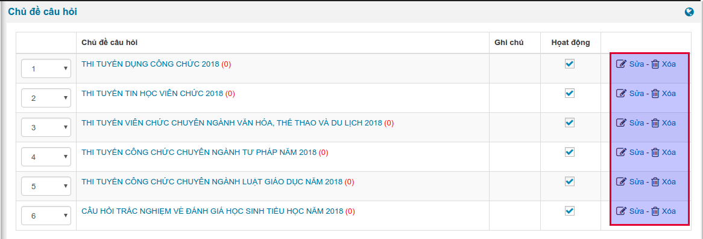
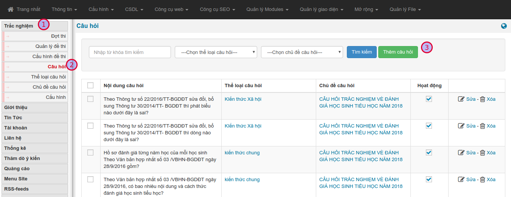
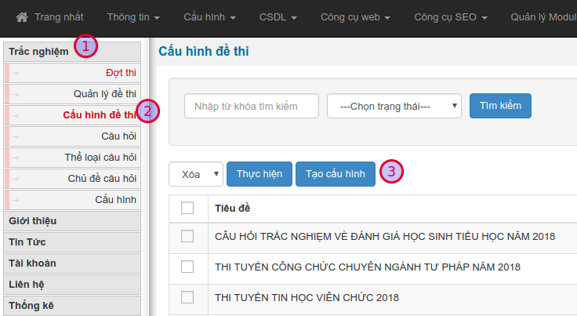
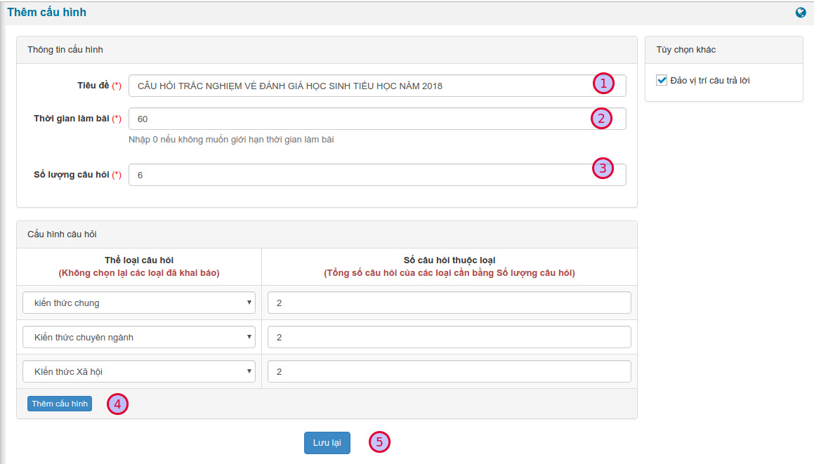
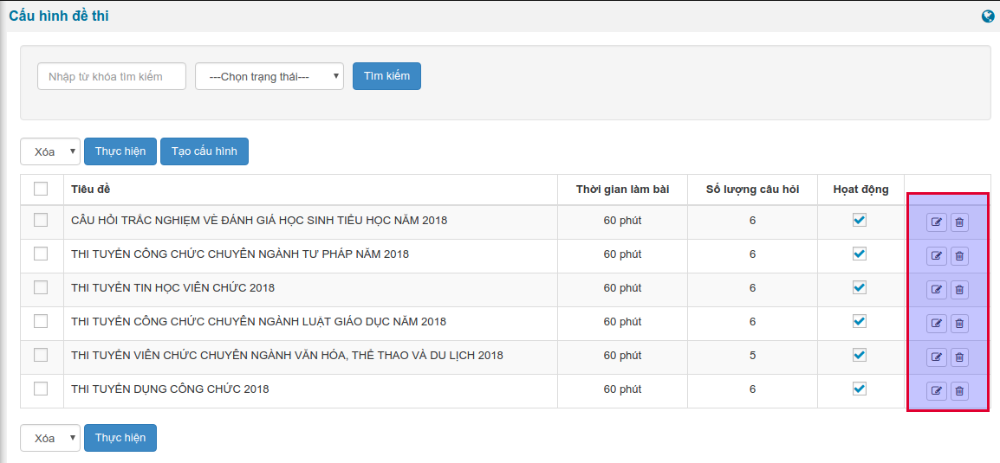
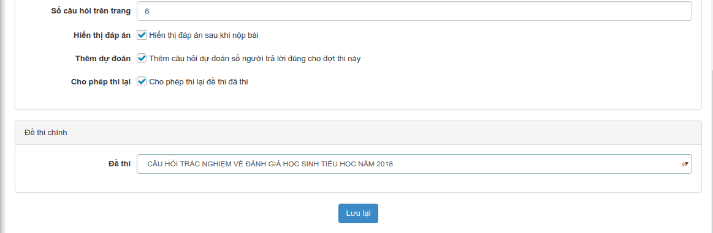
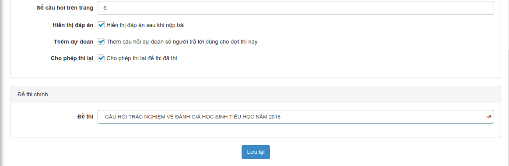
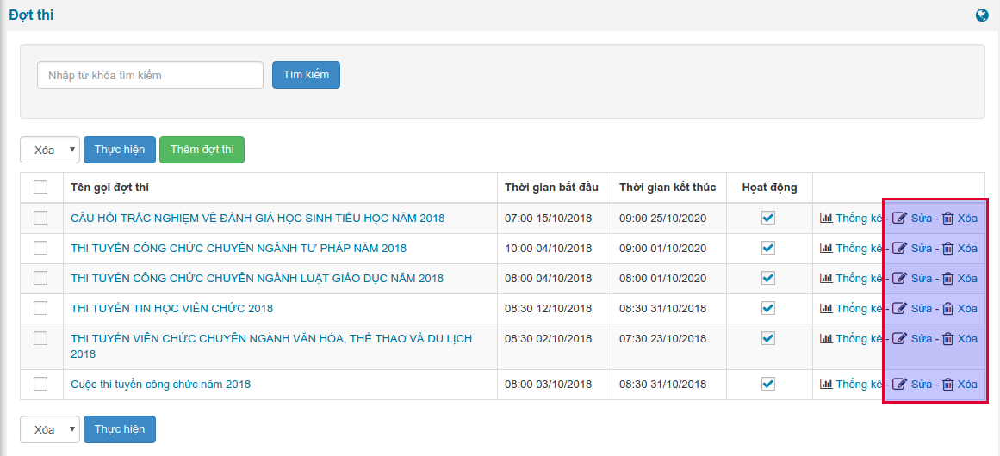

Dưới đây là các hạng mục quan trọng nhất, bạn cần đọc và thực hiện lần lượt từ 1 -> 7
1. Quản lý chủ đề câu hỏi
Câu hỏi sẽ được chia thành các chủ đề đẻ quản lý
1.1. Tạo chủ đề
Từ giao diện chính, truy cập menu Trắc nghiệm (1) / Chủ đề câu hỏi (2)

Để thêm chủ đề mới, kéo xuống biểu mẫu cuối trang, bạn cần điền những trường thông tin có đánh dấu sao (*)

Nhấn Lưu lại để thêm. Hệ thống sẽ chuyển về danh sách các chủ đề hiện có.
1.2. Sửa, xóa chủ đề
Để sửa thông tin chủ đề, trên danh sách, bạn chọn liên kết Sửa, ở cuối dòng. Tương tự cho việc Xóa

2. Quản lý thể loại câu hỏi
Câu hỏi được chia thành nhiều thế loại để phân loại quản lý
2.1. Tạo thể loại câu hỏi
Từ giao diện chính, truy cập menu Trắc nghiệm (1) / Thể loại câu hỏi (2)

Để thêm thể loại câu hỏi mới, kéo xuống biểu mẫu cuối trang, bạn cần điền những trường thông tin có đánh dấu sao (*)

Nhấn Lưu lại để thêm. Hệ thống sẽ chuyển về danh sách các thể loại câu hỏi hiện có.
2.2. Sửa, xóa thể loại câu hỏi
Để sửa thông tin thể loại câu hỏi, trên danh sách, bạn chọn liên kết Sửa, ở cuối dòng. Tương tự cho việc Xóa

3. Quản lý câu hỏi
3.1. Thêm câu hỏi mới
Từ giao diện chính, truy cập menu Trắc nghiệm (1) / Câu hỏi (2) / Thêm câu hỏi (3)

Trong giao diện tiếp theo, bạn điền đầy đủ các trường thông tin, sau đó nhấn Lưu lại ở cuối trang để hoàn tất.

| STT | Thông tin | Mô tả |
|---|---|---|
| 1 | Chủ đề câu hỏi | Chọn chủ đề câu hỏi. Danh sách chủ đề được quản lý tại Quản lý chủ đề câu hỏi |
| 2 | Tiêu đề | Tiêu đề, là nội dung câu hỏi |
| 3 | Thể loại câu hỏi | Chọn thể loại câu hỏi. Danh sách thể loại được quản lý tại Quản lý thể loại câu hỏi |
| 4 | Đáp án |
|
3.2. Sửa, xóa câu hỏi
Để sửa thông tin câu hỏi, trên danh sách, bạn chọn liên kết Sửa, ở cuối dòng. Tương tự cho việc Xóa

4. Quản lý cấu hình đề thi
Cấu hình đề thi là việc thiết lập các thông số cơ bản để triển khai một đề thi
4.1. Tạo cấu hình đề thi mới
Từ giao diện chính, truy cập menu Trắc nghiệm (1) / Cấu hình đề thi (2) / Tạo cấu hình (3)

Trong giao diện tiếp theo, bạn điền đầy đủ các trường thông tin, sau đó nhấn Lưu lại ở cuối trang để hoàn tất.

| STT | Thông tin | Mô tả |
|---|---|---|
| 1 | Tiêu đề | Nhập tên gọi của cấu hình |
| 2 | Thời gian làm bài | Nhập thời gian làm bài (phút) của đề thi thuộc cấu hình này |
| 3 | Số lượng câu hỏi | Nhập số câu hỏi của đề |
| 4 | Cấu hình câu hỏi |
|
4.2. Sửa, xóa cấu hình câu hỏi
Để sửa thông tin cấu hình câu hỏi, trên danh sách, bạn chọn liên kết Sửa, ở cuối dòng. Tương tự cho việc Xóa

5. Quản lý đề thi
5.1. Tạo đề thi mới
Từ giao diện chính, truy cập menu Trắc nghiệm (1) / Đề thi (2) / Thêm đề thi (3)

Trong giao diện tiếp theo, bạn điền đầy đủ các trường thông tin, sau đó nhấn Lưu lại (6) ở cuối trang để hoàn tất.

| STT | Thông tin | Mô tả |
|---|---|---|
| 1 | Tiêu đề | Nhập tên gọi của đề thi |
| 2 | Chủ đề câu hỏi | Chọn chủ đề câu hỏi |
| 3 | Cấu hình đề thi | Chọn cấu hình đề thi |
| 4 | Giới thiệu | Nhập giới thiệu ngắn gọn về đề thi |
| 5 | Số lượt làm bài | Chọn số lượt làm bài trên mỗi đề, ứng với một người thi |
5.2. Sửa, xóa đề thi
Để sửa thông tin đề thi, trên danh sách, bạn chọn liên kết Sửa, ở cuối dòng. Tương tự cho việc Xóa

6. Quản lý đợt thi
6.1. Tạo đợt thi mới
Từ giao diện chính, truy cập menu Trắc nghiệm (1) / Đợt thi (2) / Thêm đợt thi (3)

Trong giao diện tiếp theo, bạn điền đầy đủ các trường thông tin, sau đó nhấn Lưu lại (6) ở cuối trang để hoàn tất.
Bạn cần điền đầy đủ các trường thông tin có đánh dấu sao (*)
 

| Thông tin | Mô tả |
|---|---|
| Tên gọi đợt thi | Nhập tên gọi của đợt thi |
| Liên kết tĩnh | Hệ thống tự điền khi bạn nhập xong tên gọi đợt thi. Bạn cứ để mặc định, không được xóa nội dung phần này |
| Giới thiệu | Nhập nội dung giới thiệu đợt thi. Nội dung này sẽ hiển thị khi bắt đầu làm bài |
| Hình ảnh | Chọn hình ảnh đại diện. Hình ảnh này sẽ hiển thị trong danh sách đợt thi bên ngoài site |
| Thời gian diễn ra | Chọn thời gian bắt đầu và thời gian kết thúc đợt thi |
| Nhóm tham gia | Chọn nhóm thành viên được phép làm bài |
| Số câu hỏi trên trang | Nhập số câu hỏi hiển thị trên một trang danh sách, trong khi làm bài thi |
| Hiển thị đáp án | Cho phép hiển thị đáp án đúng sau khi người thi nộp bài hay không |
| Thêm dự đoán | Hiển thị thêm câu hỏi phụ, dự đoán có bao nhiêu người trả lời đúng tất cả |
| Cho phép thi lại | Cho phép người thi làm lại bài thi trong thời gian diễn ra thi. Hệ thống sẽ ghi lại kết quả thi cao nhất |
| Đề thi | Chọn đề thi ứng với đợt thi này |
Sau khi thêm đợt thi thành công, đợt thi mới sẽ hiển thị tại trang chủ.
6.2. Sửa, xóa đợt thi
Để sửa thông tin đợt thi, trên danh sách, bạn chọn liên kết Sửa, ở cuối dòng. Tương tự cho việc Xóa
